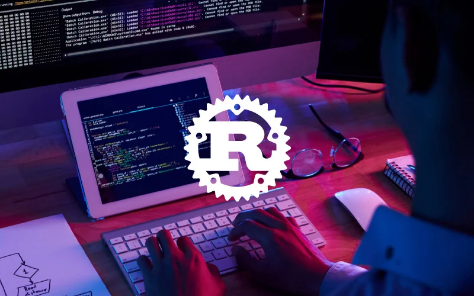

Rust es un lenguaje de programación compilado, de propósito general y multiparadigma, desarrollado por la Fundación Rust. Soporta programación funcional, imperativa, por procedimientos y orientada a objetos. Su desarrollo es abierto y comunitario, aunque ha sido patrocinado por Mozilla y Samsung. El diseño del lenguaje se fue perfeccionando gracias a proyectos como el motor de navegador Servo y su propio compilador. Rust ha ganado popularidad por su seguridad y rendimiento, siendo muy utilizado en el ámbito de las criptomonedas para la creación de nodos de minería. En 2022 alcanzó un hito importante al convertirse en el tercer lenguaje admitido en el núcleo de Linux, después de C y ensamblador.
Rust es un lenguaje de programación compilado, multiparadigma y de propósito general, desarrollado de manera abierta por la Fundación Rust con el apoyo de Mozilla y Samsung. Nació con el objetivo de ser un lenguaje seguro, eficiente y moderno para crear aplicaciones grandes del lado del cliente y del servidor en Internet. Su diseño prioriza la seguridad en memoria, el control de concurrencia y la fiabilidad del código, eliminando problemas comunes como los punteros nulos o colgantes. Aunque su rendimiento puede ser menor al de C++ en condiciones simples, cuando se aplican medidas de seguridad comparables, Rust puede ser incluso más rápido. Gracias a estas características, ha sido adoptado en áreas como el desarrollo de criptomonedas, la programación de sistemas y, desde 2022, en el núcleo de Linux.
Su sintaxis se asemeja a C y C++, pero introduce innovaciones como la palabra clave match para ramificación múltiple y el uso de traits, inspirados en Haskell, para ofrecer polimorfismo y herencia de forma más segura. También cuenta con inferencia de tipos y un sistema de inicialización estricta que previene errores en tiempo de compilación. Rust implementa concurrencia mediante tareas que se comunican a través de paso de mensajes, similar a Erlang, y optimiza la transferencia de datos mediante “cajas únicas” que garantizan un único propietario. Además, su sistema de objetos se organiza con impl y traits, evitando los problemas de herencia múltiple de lenguajes tradicionales como C++. Todo esto hace de Rust un lenguaje moderno, robusto y confiable para proyectos de alto nivel y sistemas críticos.
Rust nació en 2006 como un proyecto personal de Graydon Hoare, empleado de Mozilla, quien le dio el nombre inspirado en una familia de hongos llamada roya. En 2009, Mozilla comenzó a patrocinar el lenguaje y lo presentó oficialmente en 2010. Ese mismo año, Rust pasó de un compilador escrito en OCaml a su propio compilador autohospedado, llamado rustc, que logró compilarse con éxito en 2011 utilizando LLVM como motor de respaldo.
La primera versión pre-alfa del compilador apareció en 2012, pero no fue hasta el 15 de mayo de 2015 que se lanzó Rust 1.0, la primera versión estable. Desde entonces, Rust publica actualizaciones cada seis semanas, con nuevas funciones que primero se prueban en versiones nightly (diarias), luego en alpha y beta. Durante su evolución, el lenguaje cambió varias veces, eliminando y puliendo características como los typestates, las clases y los punteros especiales, para dejar paso a un modelo más seguro y moderno basado en traits, implementaciones y tipos estructurados.
A pesar de esas transformaciones, Rust comenzó a ganarse un lugar entre los programadores. En 2014 ya era visto como un posible rival de C++, Go o D, aunque su rápida evolución dificultaba la adopción. Sin embargo, pronto conquistó a la comunidad: en la encuesta de Stack Overflow, fue el tercer lenguaje más querido en 2015 y ocupó el primer lugar de 2016 a 2020 de forma consecutiva. Hoy en día, Rust es considerado uno de los lenguajes más confiables, modernos y seguros, y sigue creciendo gracias a su activa comunidad y al respaldo de empresas como Mozilla y Samsung.
Durante sus primeras versiones, Rust experimentó muchos cambios importantes que ayudaron a definir su identidad actual. Hasta la versión 0.4, el lenguaje incluyó un sistema llamado typestates, que permitía detectar errores en tiempo de compilación al modelar las condiciones antes y después de ciertas instrucciones. Aunque esta característica era innovadora, se eliminó porque se usaba poco en la práctica, aunque aún es posible replicar su funcionalidad con otros patrones propios de Rust.
El sistema de objetos también cambió bastante en sus primeras etapas. En la versión 0.2 se introdujeron las clases y, poco después, la versión 0.3 añadió destructores y polimorfismo mediante interfaces. Sin embargo, en la versión 0.4 se incorporaron los traits como alternativa más flexible y segura, fusionando las interfaces con ellos y eliminando las clases. A partir de entonces, Rust adoptó un modelo basado en implementaciones, traits y tipos estructurados, lo que consolidó la base de su diseño moderno y lo diferenció de lenguajes como C++ o Java.
Rust se ha consolidado como un lenguaje moderno, seguro y de alto rendimiento, muy valorado en el desarrollo de software donde la confiabilidad y el control de memoria son cruciales. Es ampliamente utilizado en sistemas críticos, desarrollo de servidores web, aplicaciones de alto rendimiento y motores de videojuegos. Su seguridad en memoria y prevención de errores comunes hacen que sea ideal para programar software de bajo nivel sin sacrificar eficiencia.
Además, Rust ha ganado relevancia en áreas emergentes como las criptomonedas y blockchain, donde se usa para crear nodos de minería y aplicaciones confiables. También ha sido adoptado en proyectos importantes de sistemas operativos; por ejemplo, desde 2022 se convirtió en el tercer lenguaje más usado en el núcleo de Linux, después de C y ensamblador. Gracias a su crecimiento constante y a una comunidad activa, Rust se considera una herramienta clave para el desarrollo de software moderno, seguro y multiplataforma.
